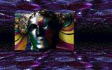

A lot of articles in Hugi deal with the demoscene. What is the demoscene, you may ask. This article is to give you some basic information on the demoscene so that you can understand the rest of the magazine.
History
The demoscene partly originates from the 1980s cracker scene on home computers such as the Commodore 64. Crackers were people who illegaly removed the copy protection of games and applications and spread the in this way 'cracked' software. There were crackers all over the world. With time they formed cracking groups in order to make their cracking more efficient. Besides this, they took on pseudonyms (also called handles) in order to get known in the cracker scene while concealing their real identity.
At some stage it became a custom for the crackers to add a little intro of their own to the cracked games. In this way they wanted to show that they were not only able to crack but also knew much of the secrets of their computer's hardware and programming. These intros were usually small programs that that consisted of a scroller text with some information on the cracker group and a greeting, a logo or another picture drawn by a member of the cracker group and background music.
Soon intro making became another important aspect of the competition between the cracker groups. Now the best groups not only had to be able to crack many new games as fast as possible, but they also had to be able to program original intros.
With time, groups were formed which specialized in making intros for the cracker groups. These groups usually did not crack any more themselves, for making intros was a more creative hobby.
At some stage, the intro-making groups got so numerous that they split from the illegal cracker scene. They formed a new, legal scene with an emphasis on programming and art: the demoscene.
The word demoscene comes from 'demo', which itself is an abbreviation of 'demonstration'. From the basic idea, demos are actually the same as intros. Their purpose is to demonstrate the abilities of its programmers, graphic designers, and musicians. But these demos are not limited by size, like it was inevitable with the crack intros, because they are not spread together with cracked programs.
As soon as new computer systems, such as the Amiga, got popular among the computer freaks, the demoscene found its way to them, too. On the PC, the first demos date from 1989. But the PC demoscene really started only in 1992, when the first electronical magazines ('diskmags') appeared on it.
Demos evolved with time. Soon the endless, boring scroller texts were gradually replaced with more creative and complex effects, for example shadebobs, plasmas, rotozoomers, and fire.
Later on 3D effects became popular. They are now ubiquitous in modern demos. Starting with simple objects such as rotating cubes, they gradually evolved into realistic 3D shows as seen in games like Doom or Quake. Various shading and anti-aliasing techniques were used in order to make the 3D worlds look as real as possible. Today, it is a must to have your own sophisticated 3D engine to make a popular demo. That is why a good knowledge of maths is necessary for every demo programmer.
Types of Sceners
While at the beginning the programmers of the demos also made the music and the graphics, these tasks were soon handled by specialized people. Nowadays the people who are involved in the making of demos can be categorized as follows:
Coders: They are the programmers of the demos. They are responsible for the graphics and sound effects, for the demo's working bug-free, and for synchronizing the individual effects and pictures with the music. On PC, coders usually use Watcom C++ and Assembler for DOS, and Visual C++ for Windows.
Graphicians: Also called Graphic Artists, GFXers, GFXians etc. They create the pictures and logos which are shown in the demos. Real graphic artists do not scan pictures but rather paint them on their computer pixel by pixel with programs like Deluxe Paint II. Lately it has also become fashionable to use applications like Photoshop. In addition to this, some graphicians use render programs such as 3D Studio, Bryce etc.
Musicians: Also called Composers. They create the music of the demos. There are many different music styles. Musicians usually specialize in one style. To create music, they use programs like Fast Tracker, Impulse Tracker or Scream Tracker.
Designers: They create the concept of the demo and tell the other people who are involved in the producing what to do. Often the coder or the graphician is also the designer.
Group Organizers: On other computer systems, they are called Group Leaders. They are mainly responsible for issues regarding their demo group, for example who can join it or who has to leave, what projects they plan, and who will do what job. They also have to take care of the communication within the group and care for its Public Relations, i.e. contact with other groups etc.
Besides this, there are people who are not directly involved in making demos but in spreading them (Mailswappers for spreading via snailmail, SysOps for maintaining Bulletin Board Systems with demos accessible by modem, FTP Archive Maintainers, Webmasters/-designers etc.), editing the electronical magazines (diskmags) of the scene (like Hugi!) and so on.
Parties
An important element of today's demoscene is Parties. Big and small, international and local parties, organized by either demosceners or in cooperation with professional organizing teams, take place during the whole year. Demosceners can meet there, exchange hints, and have some fun together. You usually take your computer with you if you go to a party. But the most important part of the parties is the compos. On a big screen, demos, graphics, music tunes, and other productions of the competing demo groups and artists are presented to the audience. The audience then vote for the productions they like best. The results get shown shortly before the end of the party. The winning groups and artists are then summoned to go to the stage, where they get prizes like CDs, T-shirts or money. The value of the prizes depends on the party. At big parties, such as The Party or Assembly, you can sometimes earn several thousands of dollars if you make the first place in the demo competition!
That is, by the way, the only immediate financial incentive for writing demos. Apart from that, demosceners create their productions for free. Long-term, however, successful demo artists have great chances at getting jobs with game companies. For example, some of the employees at Eidos (the company behind Tomb Raider) are members of the demo group The Black Lotus.
Age of Sceners
At the moment, the average age of a demoscener seems to be a bit above 20 years. Many demosceners are computer science students, and the younger ones go to high school. In general, demosceners are mostly intelligent people.
Scenish Productions
Besides demos, demosceners also make other productions, for example musicdisks (collections of music tunes embedded in graphical interfaces), artdisks (the same but for graphics), wild demos (demo-like productions which do not fit the party's rules for the demo compo, often movies/animations or demos for uncommon systems like Playstation) or intros. The term intro has a slightly different meaning today than in the past: An intro is just a normal demo, but it is limited in size. There are 64k intros, with a maximum size of 65536 bytes, and 4k intros, with a maximum size of 4096 bytes. Less common variants are 256k intros, 128k intros, 512-bytros, etc.
Moreover, there are diskmags. As said, diskmags are electronical magazines. They are embedded in a unique interface with graphics and music and usually have several hundred kilobytes of articles. The topics of demoscene diskmags are mainly demoscene-related, but there are also diskmags which have their emphasis on other issues. Demoscene diskmags usually publish news about the scene, interviews with famous sceners, results and reports about parties, hints for coders, graphicians and musicians, discussions about the recent developments in the scene (both from the technical and the social point of view), demo reviews, and charts.
Scene Sites on the Internet
There are also many FTP servers and web-pages about the demoscene on the Internet. One of the most important sites was Hornet, which contained a huge archive of demoscene productions since 1992. Unfortunately, the Hornet Archive does no longer accept uploads. A promising new scene site is scene.org, which hosts both a vast and up-to-date scene archive and web-pages of scene groups. Regarding news sites, check out Orange Juice, CFXweb, Scenet, and Demoscene.org. There are also three big charts sites: The Official Eurochart PC, Orange Juice Charts and Doose Charts.
The PC demoscene has its own newsgroups as well. The most important one is comp.sys.ibm.pc.demos, which is available on most Usenet servers. Also, there are the alt.trebel.* newsgroups and the newsserver news.scene.org.
Some Demogroups you should know
Future Crew: This old Finnish group is still one of the most popular PC demoscene groups, although its last major productions date back from 1994. They created remarkable demos such as Panic, Unreal and Second Reality. Their main coder is PSI, main graphicians Pixel and Marvel, and main musicians Skaven and Purple Motion.
Surprise!Productions: A group of the first half of the 1990s. Founded in Austria, it became a big international group with time. Later its local sections gradually became independent: S!P Poland founded Pulse together with some French sceners, and S!P Belgium was reformed to Beans. These two sub-sections of S!P were also responsible for two diskmags, namely Bad News (in Polish and English language) and Scenial (English). When they left S!P, the follow-up groups continued the diskmags for a while. S!P has lately been re-founded and also got a homepage.
A scene of Sunflower by Pulse
Pulse: At its peak, it was an international group with members from Poland, France, Finland, Norway, the United Kingdom and other countries. It used to dominate the demoscene in 1996-1998. Some outstanding demos are Square, Sunflower, and Tribes. Some of the best known members were Unreal (code, Poland), Camel (code, Poland), Scorpik (music, Poland), Lazur (graphic, Poland), Visualize (graphic, Poland), Haplo (graphic, France), Antony (graphic, France), Gandalf (sysop, France), Jogeir (music, Norway), and Statix (code, United Kingdom). Unfortunately, the Polish section left Pulse at the end of 1998.
Haujobb: Big international Amiga group that has lately become one of the leading forces in the PC scene, too. Most of its members come from Germany or Finland. One of their main PC coders, Hellfire, is also known as a graphician. Their ex-musician Muffler has made the music for almost every party-winning Amiga demo or intro in 1998 and 1999. They have two homepages, one maintained by Droid and another by the rest of the group.
NoooN: A French group that produced legendary demos like No! or Stars - Wonders of the World. Some of their members are Karl (code), Barti (code), Ra (graphics), Moby (music).
Orange: A Finnish group known for original, stylish intros. Their latest production is "the nonstop ibiza experience", released at Assembly 2k.
Doomsday: Also coming from Finland, they produced some interesting demos such as the Boost saga and released the sources of their demo engine to the public. The group officially ceased to exist in 1998.
Sunflower: New group (since summer 1999) combining members (and ex-members) of Pulse, Matrix, Bomb!, CnCd, Hellcore, etc. Made the demos Wonder and Zilog, which ranked 1st and 2nd respectively at Gravity 1999. Recently they released a new demo called Tesla, which came 2nd at Horizon 2k. Their homepage was designed by the famous graphician Antony Squizzato.

A scene of 303 by Acme
Acme: This group has members from various countries, mainly The Netherlands. Its best known production is the demo 303. Aap, member of Acme, was also one of the editors of the Imphobia diskmag. Not active any more.
Bomb!: French group with members like Made (graphic), Djamm (music) and Skal (code, music). They got 2nd place in the demo competition of The Party 1998 with their demo State of mind, which now holds top ranks in the charts. The 1st place went to MOAI by the group Nomad that also come from France. Bomb!'s homepage is one of the most beautiful websites of scene groups.
Triton: Old Scandinavian group which is best known for their demos Crystal Dreams I+II and their composing program Fast Tracker.
Electro Motive Force: Finnish group which was especially popular in the middle of this decade. Its best known production is the demo Verses, which won Assembly '94.
Matrix: German group which shocked the scene with their demo The Fulcrum at the Mekka & Symposium 1998 party. They are still active. Their latest release is the 64k intro G-Cube which won Mekka & Symposium 2k-1.
Cubic Team and $een: Another German group that released several demos and intros, such as Lasse Reinbong, and a well-known music player called Cubic Player. Their best known ex-member is pascal, the author of the Cubic Player, who left the group at the end of 1997. Other known members are Submissive (code) and doj (gfx, music). They also release joke productions under the label Topcrew. Two of their members, Frenetic and Submissive, are responsible for the demo scene corner in the German paper magazine PC-Magazin.
Other famous German groups: Legend Design, The CoExistence, Xography, Sanity, Keen Like Frogs (all inactive), Kolor, Smash Designs. In 1998, members of several leading German demo groups formed two new crews called EliteCrew and Elitegroup. The latter won the accelerated demo and the wild demo competitions at The Party 1999.
Imphobia: International group that released the famous Imphobia diskmag from 1992-1996. They also made some other productions, partly in cooperation with Cascada, organized the Wired parties, and made two CDs with scene productions (called Dreams).
INFeriors: Norwegian group which published the diskmag Daskmig in 1995. Recently, they have become active again. Their demo Yume 2 got 4th place at The Party 1998, and their graphician TMK won the Pixel Graphics competition. One of their latest productions is Yume 2000, the sequel to Yume 2.
Complex: Well-known Finnish group that has been around for some years and is still active. They renamed to Komplex and mainly release demos programmed in Java nowadays.
Sanction, Fudge, Halcyon: Groups which are mainly known for quality 4k-intros (Sanction) and 64k intros (the others).
The Black Lotus: Big group on Amiga, PC, and Atari computers. Their best known members on PC are Jace, Nix (both code), and Probe (music, code). One of the best scene graphicians, Danny, also used to be a member of them before he started working with Eidos. TBL are mainly famous for their 64k intros Jizz and Stash.
TPOLM: Scandinavian group making weird styled demos and intros. Very popular. Their constantly changing homepage has little to do with demos, but features extravagant things such as vegetarian dishes.
Exceed is a Hungarian group that is starting to get established as one of the top groups worldwide. The scene was very impressed by their 64k intro Heaven 7 (1st at Mekka & Symposium 2k) and their demo Spot! Desktop Adventures (1st at Assembly 2k).
Astroidea, Rhyme, Mandula: Also Hungarian groups. Rhyme is especially known for their awesome 4k intro Mesha, coded by Picard, which won the first place at Assembly 1998 and contains seven 3D scenes.
Purple: Danish group that has been active for a few years now and has lately released some popular demos in cooperation with Blasphemy, another Danish group known for its design.
Byterapers: Finnish C64/PC group, active for more than 10 years. Their coder is called Mr. Sex, and one of their most popular demos is called Sexadelic. Another one is Hyperventilation. The group organizer Grendel is working as a journalist for Scandinavia's largest computer magazine Mikrobitti.
Rectum Cauda, Hirmu, tAAt: Scandinavian joke groups. Technically, their demos are usually of deliberately low quality, but they are intended to entertain people with the built-in jokes.
Handles
Sceners usually sign documents with their handle, a slash, and their group name. For example, "Adok/Hugi" means that I am Adok, member of Hugi. If you are a member of more than one group, you can list them all in the same way, e.g. "Unreal/Pulse/CNCD". In the middle of this decade, it has also become fashionable to write '^' instead of the slash: "adok^hugi". Instead, some people use dots or lines: "e605.sdi", "fear_tbl". The main reason for this is that you cannot use a slash in your nickname on the Internet Relay Chat (IRC), which became popular in the PC scene in 1995.
Scene Slang
By now you have seen that there are demosceners all over the world. You may ask now how they communicate. The answer is easy: Since almost everyone speaks at least a little English, demosceners use this language when they talk with fellow sceners from other countries.
However, there are some peculiarities in Scene English. Not only do sceners often use abbreviations which are common in the Internet, such as 'u' for 'you', 'cu' for 'see you', 'w8' for 'wait', '10x' or 'tnx' for 'thanks', 'btw' for 'by the way', 'im(h)o' for 'in my (humble) opinion', 'ppl' for 'people' or 'aka' for 'also known as', there are also some words and ways of spelling others may find strange.
As regards spelling, some people are accustomed to replacing an 's' at the end of a plural world with 'z' when they want to be 'cool'. In this way, 'demos' becomes 'demoz'. 'f' is morphed into 'ph', and if a word ends with 'ks' or 'ts', the ending will be transformed to 'x': 'phreaks' and 'phreax'. Sceners also often write in lower letters, be it because it is faster or because it looks cooler. However, diskmags like Hugi try to avoid such peculiarities. More important are some words which you will often find in diskmags. I will explain some of them here.
Compo: Abbreviation for Competition.
Credits: Shows who made what part of a demoscene production.
Ripping: If someone rips, it means that he uses source code, graphics, music etc. from another production in his own one without having the author's permission or crediting him. Ripping is regarded as a severe offence in the scene. Although someone who rips will hardly be summoned to appear in court, he will be disdained by the other demosceners.
Dude, Dewd: Synonym of person.
Bug: Programming mistake.
Lamer: This word has a derogatory meaning. On the one hand, sceners use it for people who have behaved badly, e.g. because they ripped something. On the other hand, some sceners call new people in the demoscene with only a little experience lamers. This is a bad attitude, because the demoscene always needs talented newcomers.
Elite: The opposite of Lamer. Some people who think they are talented, have made good productions or are well-known in the demoscene call themselves elite. The word 'elite' is also used ironically for people who think they are the gods of the scene but have not shown much of their talent yet. Elite dudes and good scene productions 'rule', while lamers and bad scene productions 'suck'.
Eleet, 31337: Other ways to spell 'elite'.
Advert: Mailswappers (the people who exchange scene productions via snailmail) usually publish small advertisements with an ASCII logo, their address and other information in diskmags. In this way they want to find new contacts.
Contact: A contact is another demoscener you exchange letters and scene productions with. Mainly mailswappers use the term 'contact'. Mailswappers often write the approximate number of contacts in their adverts.
Scene Stuff: It means all kinds of 'scene productions'.
Greetings: By custom, sceners greet their scene friends (contacts) in the 'greetings' section in their demos, diskmags and other productions. If a whole demo group greets other groups, this is called 'group greetings'.
Respects: The same as greetings, but to sceners whom you admire although you do not have direct contact with them.
Warez: Illegal copies of copyrighted software.
Mag, Zine: Abbreviations for 'diskmag'. Amiga sceners call their diskmags 'ScenZines'.
BBS: Bulletin Board System. You can log on a BBS using a modem or ISDN. In demoscene-related BBS's, you can up- and download demoscene stuff, chat with other users or post messages in conferences. BBS's were essential for the demoscene in the past, but nowadays FTP archives are more important.
Oldskool: People who make productions in the way it used to be in early days of the scene are called oldskool. Good old productions and sceners are also called oldskool. In large parts of the scene, "oldskool" is a term of respect.
ASCII/ANSI: ASCII is the charset of MS-DOS. So-called ASCII artists create logos and pictures using only ASCII characters. ANSI is a kind of text format which is used in many BBS's. It mainly allows to output ASCII characters in various colours and with special attributes, such as blinking. There is a whole scene, independent of the demoscene, whose members create pictures in ANSI.
file_id.diz: A small file that is attached to most programs and contains short descriptions, mainly used for BBS's. Demoscene productions usually come along with file_id.diz files, which contain small ASCII logos.
Closing Words
Okay, that was a short introduction to the PC Demoscene. By now you should be able to understand the content of this magazine.
If you want to learn more about the Scene, check out the following:
For more information on mailswapping, read the SWAPPING-FAQ in Hugi #13, and if you want to learn more about diskmags, check out the mags.faq in Hugi #11.
Happy reading!
Adok/Hugi (main editor)